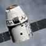

<div class="dragon-content">
	<div class="intro-container">
		<div class="intro-top">
			<div class="intro-title">
				<h1>DRAGON</h1>
			</div>

			<div class="intro-photos">
				<div class="nav-1">
					
					<br>
					<span>Photo</span>
					<br> Gallery
					<br>
					<a href="#">SEE ALL <span>→</span></a>
				</div>
				<div class="nav-2">
					<a href="https://www.spacex.com/missions">LAUNCH MANIFEST <span>→</span></a>
				</div>
				<div class="nav-2">
					<a href="https://www.spacex.com/crew-dragon">CREW DRAGON <span>→</span></a>
				</div>
			</div>
		</div>

		<div class="info-container">
			<div class="span4">
				<p id="span-left">Dragon is a free-flying spacecraft designed to deliver both cargo and people to orbiting destinations. Dragon made history in 2012 when it became the first commercial spacecraft in history to deliver cargo to the International Space Station and safely return cargo to Earth, a feat previously achieved only by governments. It is the only spacecraft currently flying that is capable of </p>
			</div>
			<div class="span4">
				<p id="span-right">returning significant amounts of cargo to Earth. Currently Dragon carries cargo to space, but it was designed from the beginning to carry humans. Under an agreement with NASA, SpaceX is now developing the refinements that will <a href="https://www.spacex.com/dragon-crew">enable Dragon to fly crew.</a> Dragon's first manned test flight is expected to take place in 2-3 years.</p>
			</div>
		</div>
	</div>
</div>
